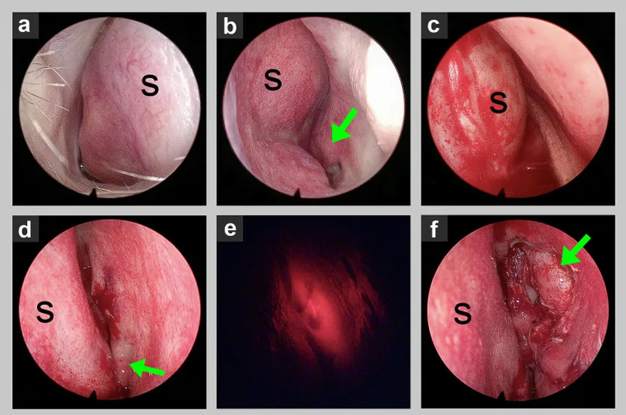
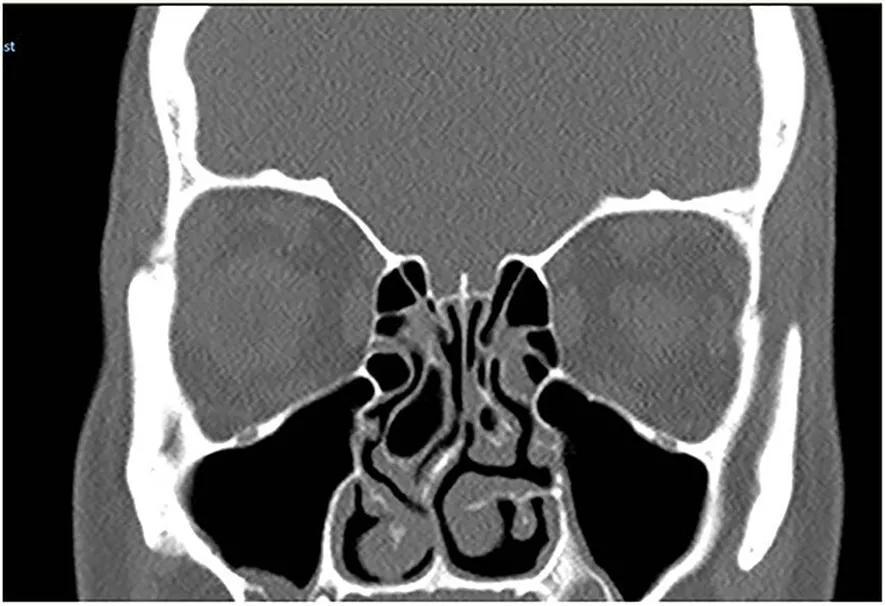

DX.4 — Déviation de la cloison nasale
L’adulte qui respire mal d’une seule narine depuis des années présente souvent une cloison déviée, mais cette anomalie très fréquente reste le plus souvent sans conséquenceS1. Le médecin écarte d’abord le traumatisme récent et la tumeur, confirme l’obstacle à l’endoscopie, mesure la gêne, puis gradue le traitement jusqu’à la septoplastieS3S6S4. Toutes les doses de ce cours viennent de l’information professionnelle suisse (AIPS) de Swissmedic ; une indication que l’AIPS ne couvre pas reste écrite « hors AIPS », sans dose.
Ce cours sur la déviation de la cloison nasale reprend les sources citées ; il n’a pas été validé cliniquement par un médecin.
1. Définition
La déviation de la cloison nasale est un écart du septum ostéocartilagineux hors de la ligne médiane, qui peut rétrécir une ou les deux fosses nasalesS1S2.
2. Épidémiologie (Suisse, puis Europe)
Les Hôpitaux universitaires de Genève (HUG) décrivent une déviation très fréquente dans la population, qui n’entraîne aucun problème respiratoire dans la majorité des casS1. Le diagnostic utile ne retient donc que la déviation qui produit une obstruction gênante, mesurée par un score validé et confirmée à l’endoscopieS1S4. Les chiffres utiles rassemblent les repères suisses puis européens, tandis que la place dans la Phase A explique le rang 3 de fréquenceS1S4S5.
Chiffres utiles : Suisse, puis Europe
| Donnée | Valeur | Population, lieu, date | Source |
|---|---|---|---|
| Fréquence de la déviation | Très fréquente, le plus souvent sans conséquence | Population générale, HUG, page du 23.04.2025 | S1 |
| Hospitalisation après septoplastie | Deux jours | Adultes opérés aux HUG, 2025 | S1 |
| Septoplasties réalisées | Environ 16 700 interventions en 2019/20 | Angleterre, essai NAIROS (Nasal Airway Obstruction Study), 2023 | S4 |
| Intervention la plus fréquente | La septoplastie est l’opération d’oto-rhino-laryngologie (ORL) la plus réalisée chez l’adulte | Pays-Bas, van Egmond, 2019 | S5 |
| Sexe des patients inclus | 67 % d’hommes | 378 adultes de 17 hôpitaux britanniques, 2018–2019 | S4 |
| Gravité à l’inclusion | Plus de 80 % avec un score NOSE (Nasal Obstruction Symptom Evaluation) sévère ou extrême | Adultes adressés à l’ORL, essai NAIROS | S4 |
| Score NOSE médian à l’inclusion | 70 sur 100 | Les deux bras de l’essai NAIROS | S4 |
Les sources suisses lues ne chiffrent pas la prévalence de la forme symptomatiqueS1. Le rang 3 de la Phase A repose donc sur la fréquence déclarée par les HUG et sur le volume opératoire européenS1S4S5. La ligne de gravité rappelle que les patients adressés au spécialiste présentent surtout des formes sévères, ce qui limite l’extrapolation aux formes modéréesS4.
Place de la déviation dans la Phase A
| Rang de fréquence | Diagnostic | Argument de rang | Source |
|---|---|---|---|
| 1 | Rhinite virale aiguë (DX.2) | Cause la plus courante de nez bouché passager | S1 |
| 2 | Rhinite allergique (DX.1) | Gonflement muqueux lié aux allergies, cité en premier par les HUG | S1 |
| 3 | Déviation de la cloison (DX.4) | Très fréquente, mais rarement gênante | S1 |
| 4 | Rhinosinusite chronique avec polypes (DX.5) | Inflammation chronique citée comme cause d’obstruction | S1 |
| 8 | Hématome de la cloison (DX.8) | Recherché après tout traumatisme du nez, drainage dans les 24 heures | S3 |
La déviation n’a pas de rang d’exclusion E, car elle ne menace ni la vie ni le cartilageS1S3. Elle devient donc le diagnostic de la gêne fixe et unilatérale, une fois les drapeaux rouges écartésS1S3.
3. Physiopathologie
La cloison associe une partie cartilagineuse et plusieurs parties osseuses ; leur croissance inégale ou leur fracture après un accident produit la déviationS2. La déviation bloque souvent un côté, alors que le cornet inférieur grossit dans la fosse opposée, ce qui explique une obstruction parfois bilatéraleS4. Le tableau des mécanismes relie chaque anomalie à un signe, puis la planche anatomique situe la valve, les cornets et les choanesS4S6S8.
Mécanismes et signes qui en découlent
| Mécanisme | Conséquence | Signe clinique | Source |
|---|---|---|---|
| Croissance inégale du cartilage ou de l’os | Courbure, crête ou éperon | Gêne permanente du même côté | S2 |
| Fracture lors d’un accident | Déviation acquise, parfois déformation externe | Gêne apparue après le choc | S2S3 |
| Hypertrophie du cornet opposé | Rétrécissement de la fosse controlatérale | Obstruction bilatérale malgré une déviation unique | S4 |
| Collapsus de l’aile du nez à l’inspiration | Dysfonction de la valve nasale | Manœuvre de Cottle positive | S6 |
| Cycle nasal physiologique | Alternance de congestion entre les deux côtés | Gêne qui change de côté, mesures variables | S6 |
| Rhinite associée | Gonflement muqueux réversible | Amélioration après décongestionnant | S1S6 |
La distinction entre composante muqueuse et composante anatomique guide tout le traitement, car seule la seconde relève de la chirurgieS6. Le test de décongestion répond à cette question : la résistance qui persiste après le spray reflète la part anatomiqueS6.
Planche guidée : où se joue l’obstruction
Coupe sagittale des fosses nasales — Cette illustration médicale en couleurs de BruceBlaus montre la paroi latérale des fosses nasales, ses cornets et le passage vers le rhinopharynxS8.

La version brute permet d’abord de repérer seul la narine, les trois reliefs des cornets et l’arrière de la fosse nasaleS8.
Les cinq cercles rouges de la copie annotée « coupe sagittale des fosses nasales » ont été contrôlés par superposition sur l’image bruteS8.
- 1. La narine et le vestibule forment l’entrée du nez, où la valve nasale peut céder à l’inspirationS8S6.
- 2. Le cornet inférieur grossit souvent du côté opposé à la déviation et ferme alors la seconde fosseS8S4.
- 3. Le cornet moyen recouvre le méat moyen, que l’endoscopie explore, car il révèle une rhinosinusite associéeS8S6.
- 4. Les choanes ouvrent les fosses nasales sur le rhinopharynx ; leur fermeture évoque une atrésie choanale, non une déviationS8S10.
- 5. La fente olfactive occupe le toit ; une gêne du flux aérien peut réduire l’odorat, qui se teste en cas de plainteS8S6.
Ce que l’image décide. La planche montre que la cloison n’est qu’un des obstacles possibles ; l’examen doit donc parcourir la valve, les cornets et les choanes avant de conclureS6.
4. Démarche diagnostique
La démarche part du symptôme, confirme l’obstacle par l’examen endoscopique, mesure la gêne par un score validé, puis sépare la part muqueuse de la part anatomiqueS4S6. Le déroulé en sept étapes fixe pour chaque étape la question posée, l’outil et la décision qui en découleS1S4S6.
Démarche diagnostique en sept étapes
| Étape | Question | Outil | Décision | Source |
|---|---|---|---|---|
| 1 | La gêne est-elle fixe, d’un côté ou des deux ? | Anamnèse ciblée | Côté fixe : obstacle anatomique ou lésion à exclure | S1S6 |
| 2 | Existe-t-il un drapeau rouge ? | Saignement, croûtes, signes oculaires, traumatisme récent | Drapeau présent : imagerie ou avis ORL rapide | S11S3 |
| 3 | Le nez externe est-il dévié ou la valve cède-t-elle ? | Inspection, palpation, manœuvre de Cottle | Valve faible : traitement distinct de la cloison | S6 |
| 4 | Où se trouve l’obstacle ? | Rhinoscopie antérieure, puis endoscopie | Déviation confirmée, polypes ou masse exclus | S6S4 |
| 5 | Que reste-t-il après décongestion ? | Décongestionnant, puis nouvel examen ou rhinomanométrie | Persistance : composante anatomique | S6AIPS 24926 |
| 6 | Quelle est la gêne ressentie ? | Score NOSE, puis SNOT-22 | Score NOSE de 30 ou plus : obstruction significative | S4 |
| 7 | Une rhinite coexiste-t-elle ? | Anamnèse allergique, tests cutanés si suspicion | Traiter la rhinite avant de juger la chirurgie | S6S4 |
L’ordre importe, car une rhinite ou une rhinosinusite non traitée peut maintenir la gêne après une septoplastie réussieS4. Les auteurs de l’essai NAIROS proposent la chirurgie seulement lorsque aucune maladie nasale ou sinusienne ne coexiste et que le score NOSE dépasse 30S4.
5. Anamnèse ciblée et drapeaux rouges
L’anamnèse précise d’abord le côté, la permanence, l’ancienneté et le facteur déclenchant, notamment un choc ancien ou récent sur le nezS2S3. La grille d’anamnèse donne l’interprétation de chaque réponse, et les drapeaux rouges imposent de chercher d’abord une autre causeS3S11S6.
Grille d’anamnèse ciblée
| Question | Réponse évocatrice | Interprétation | Source |
|---|---|---|---|
| Quel côté est bouché ? | Toujours le même côté | Obstacle fixe : déviation, polype isolé, corps étranger ou tumeur | S6S11 |
| Depuis quand ? | Depuis l’adolescence ou après un accident | Croissance inégale ou fracture ancienne | S2 |
| Un choc récent ? | Coup sur le nez depuis moins de deux semaines | Rechercher un hématome et une fracture, consolidation dès le 10e jour | S3 |
| Ronflement, apnées, masque nocturne ? | Pression positive mal tolérée | La septoplastie peut permettre le port d’un masque nasal | S1S2 |
| Infections ou sinusites à répétition ? | Épisodes récurrents | Possible association à la déviation, rhinosinusite à exclure | S2 |
| Éternuements, prurit, saisonnalité ? | Symptômes allergiques | Rhinite associée à traiter avant toute décision chirurgicale | S1S6 |
| Quels sprays ? | Décongestionnant depuis plus d’une semaine | Risque de rhinite médicamenteuse selon l’AIPS | AIPS 24926 |
| Quels médicaments ? | Aspirine ou anticoagulant | À signaler avant toute chirurgie, car le moment de la reprise se discute | S2 |
La gêne d’un seul côté, ancienne et stable, sans saignement ni écoulement purulent, oriente vers la cloison avant tout autre diagnosticS1S6.
Drapeaux rouges : quand penser à autre chose
| Drapeau rouge | Diagnostic à exclure | Conduite | Source |
|---|---|---|---|
| Tuméfaction molle de la cloison après un choc | Hématome de la cloison (DX.8, E2) | Drainage par l’ORL dans les 24 heures, puis antibiotique | S3 |
| Écoulement clair après un traumatisme | Fistule de liquide céphalo-rachidien (LCR) | Dosage de la bêta-2-transferrine et appel neurochirurgical | S3 |
| Nez bouché d’un seul côté qui ne passe pas, avec saignements | Tumeur nasosinusienne (DX.10, E4) | Examen du nez et du cou, orientation rapide vers le spécialiste | S11 |
| Vision double, larmoiement ou œil saillant | Extension tumorale vers l’orbite | Consultation rapide, imagerie | S11 |
| Écoulement unilatéral chez l’enfant | Corps étranger (DX.7) ou atrésie choanale unilatérale (DX.9) | Endoscopie, extraction ou imagerie | S10 |
| Dyspnée aiguë ou saignement massif après un choc | Atteinte des voies aériennes ou fracture associée | Protéger les voies aériennes, tomodensitométrie (TDM) du massif facial | S3 |
Un seul drapeau rouge suffit à suspendre le diagnostic de déviation simple, car ces causes demandent un geste rapide ou une imagerieS3S11.
6. Examen physique ciblé, région par région
L’examen suit le trajet de l’air, de la pyramide nasale au rhinopharynx, et compare toujours les deux côtésS6. Chaque région a sa fenêtre : pyramide, valve, rhinoscopie antérieure, test de décongestion, endoscopie et cavité buccaleS6S3. La planche endoscopique montre ensuite une déviation réelle avant et après correctionS7.
Région 1 — Pyramide nasale : inspection et palpation
| Geste | Ce qu’on cherche | Interprétation | Source |
|---|---|---|---|
| Regarder de face puis par en dessous | Axe de la pyramide, symétrie des narines | Déformation externe associée à la déviation | S3S6 |
| Inspecter à l’inspiration | Sténose vestibulaire, collapsus des ailes | Obstacle de la valve, distinct de la cloison | S6 |
| Palper l’os et le cartilage | Points douloureux, fausse mobilité, crépitation | Fracture récente, avis spécialisé | S3 |
| Examiner la peau | Plaie, cicatrice, changement de couleur | Traumatisme ancien ou récent | S6S3 |
La partie osseuse se dévie surtout après un traumatisme, alors que la pointe cartilagineuse se dévie plutôt pendant la croissanceS6.
Région 2 — Vestibule et valve nasale
| Geste | Résultat | Interprétation | Source |
|---|---|---|---|
| Manœuvre de Cottle | La respiration s’améliore quand la joue est tirée en dehors | Dysfonction de la valve nasale | S6 |
| Relever la pointe sans spéculum | Première vue de la cloison et de la tête du cornet | Geste utile chez le nourrisson | S6 |
| Test du miroir froid | Buée asymétrique sous les narines | Débit expiratoire réduit d’un côté | S6 |
Une valve qui cède n’est pas corrigée par la septoplastie seule ; elle doit donc être reconnue avant de promettre un bénéficeS6S4.
Région 3 — Fosses nasales : rhinoscopie antérieure
| Étape | Technique | Constat possible | Source |
|---|---|---|---|
| Éclairage | Lampe frontale et spéculum nasal, ou otoscope | Vue de la cloison antérieure et des cornets inférieurs | S6S3 |
| Introduction | Spéculum incliné à 45°, sans toucher la cloison sensible | Examen indolore et complet | S6 |
| Lecture | Comparer la largeur des deux fosses | Asymétrie, le plus souvent septale | S6 |
| Recherche de lésions | Muqueuse, sécrétions, masses | Polypes, tumeur ou corps étranger à exclure | S6 |
| Retrait | Spéculum retiré fermé | Évite d’arracher les poils, geste douloureux | S6 |
Les asymétries vues à la rhinoscopie antérieure concernent surtout la cloison nasale, ce qui rend cet examen simple déjà très informatifS6.
Région 4 — Muqueuse : test de décongestion
| Temps | Geste | Lecture | Source |
|---|---|---|---|
| Avant | Noter la largeur des fosses et la gêne | Situation de base | S6 |
| Application | Décongestionnant nasal, indication AIPS « Pour faciliter la rhinoscopie » | Rétraction de la muqueuse | AIPS 24926 |
| Après | Nouvel examen ou nouvelle mesure | Différence due à la congestion muqueuse | S6 |
| Résultat | Obstruction persistante du même côté | Composante anatomique : la cloison | S6 |
Cette indication de l’information professionnelle suisse (AIPS) couvre le geste de consultation, alors que l’usage prolongé à domicile reste borné à une semaineAIPS 24926.
Région 5 — Fosse postérieure et rhinopharynx : endoscopie
| Temps | Ce qu’on regarde | Interprétation | Source |
|---|---|---|---|
| Préparation | Anesthésie locale associée à un décongestionnant | Examen confortable | S6 |
| Premier passage | Plancher, cloison, cornet inférieur, choanes, rhinopharynx | Déviation postérieure ou éperon | S6 |
| Deuxième passage | Méat moyen | Rhinosinusite ou polypes associés | S6 |
| Synthèse | Déviation confirmée et absence d’autre lésion | Condition d’entrée de l’essai NAIROS | S4 |
L’Académie européenne d’allergologie et d’immunologie clinique (EAACI) tient l’endoscopie nasale pour l’examen de référence, car elle voit toute la fosse avec peu d’inconfortS6.
Région 6 — Cavité buccale, face et nerfs crâniens
| Geste | Ce qu’on cherche | Interprétation | Source |
|---|---|---|---|
| Examen endobuccal | Dents mobiles, saignement postérieur, palais | Traumatisme associé ou masse du palais | S3S11 |
| Examen de la face | Douleur, engourdissement, tuméfaction | Extension d’une tumeur ou fracture faciale | S11S3 |
| Cou | Ganglions augmentés | Orientation vers une tumeur | S11 |
| Nerfs crâniens | Odorat, vision, diplopie, sensibilité de la face | Atteinte neurologique après un traumatisme | S3 |
Cet examen ne montre pas la déviation, mais il écarte les causes graves qui partagent la même gêne unilatéraleS11S3.
Planche guidée : la déviation vue à l’endoscope
Endoscopie d’une déviation septale massive — Ces photographies endoscopiques en couleurs d’une équipe polonaise montrent une cloison déviée, sa correction, puis la fosse nasale élargieS7.

Le lecteur repère d’abord la lettre S, qui marque la cloison dans chaque cercle endoscopique ; les vues e et f concernent une chirurgie lacrymaleS7.
Les quatre cercles rouges de la copie annotée « endoscopie d’une déviation septale massive » ont été contrôlés par superposition sur l’image bruteS7.
- 1. Dans la fosse droite, la cloison bombée remplit presque tout le champ, ce qui définit une déviation massiveS7.
- 2. Dans la fosse gauche, la flèche verte montre le cornet inférieur, que la cloison déviée comprimeS7.
- 3. Pendant la septoplastie, la muqueuse est décollée et le cartilage septal apparaît sous la lettre SS7S2.
- 4. Après correction, la cloison redressée laisse une fosse gauche plus large, ce que vise l’interventionS7S2.
Ce que l’image décide. L’image décide de la nature de l’obstacle : une cloison qui touche le cornet après décongestion relève d’une discussion chirurgicaleS6S4.
7. Approche syndromique
L’obstruction nasale garde des causes multiples, muqueuses ou anatomiques, si bien que la déviation doit être distinguée de chaque voisin de la liste geléeS1S4. Le tableau des voisins reprend le rang de chaque voisin dans la liste et isole, ligne par ligne, le signe qui l’écarte de la déviation septaleS1S6S3S10S11.
Diagnostics voisins dans l’ordre de la liste gelée
| DX | Diagnostic | Ce qui le distingue de la déviation | Examen qui tranche | Source |
|---|---|---|---|---|
| DX.1 | Rhinite allergique | Gêne bilatérale et variable, prurit, éternuements | Tests cutanés si suspicion clinique | S6S1 |
| DX.2 | Rhinite virale aiguë | Début brutal, durée courte, infection | Évolution spontanée | S1 |
| DX.3 | Rhinite médicamenteuse | Décongestionnant utilisé plus d’une semaine | Arrêt du spray | AIPS 24926 |
| DX.4 | Déviation de la cloison | Obstacle fixe, persistant après décongestion | Endoscopie et décongestion | S6S4 |
| DX.5 | Rhinosinusite chronique avec polypes | Polypes visibles, écoulement, odorat réduit | Endoscopie du méat moyen, TDM | S6 |
| DX.6 | Hypertrophie adénoïdienne | Enfant, obstacle postérieur dans le rhinopharynx | Endoscopie du rhinopharynx | S6 |
| DX.7 | Corps étranger nasal | Enfant, écoulement unilatéral malodorant | Rhinoscopie, extraction | S6S10 |
| DX.8 | Hématome de la cloison | Tuméfaction molle après un choc | Rhinoscopie, drainage avant 24 heures | S3 |
| DX.9 | Atrésie des choanes | Nouveau-né ; sonde arrêtée à 3 à 3,5 cm, contre 1 à 2 cm pour la cloison | Sonde d’aspiration, endoscopie, TDM | S10 |
| DX.10 | Tumeur maligne nasosinusienne | Gêne unilatérale progressive, saignement, signes oculaires | Endoscopie, imagerie, biopsie | S11 |
Le diagnostic de déviation reste donc un diagnostic d’obstacle fixe, posé seulement lorsque l’examen a écarté la masse, l’inflammation et le traumatisme récentS6S3S11.
8. Diagnostic positif et critères
Le diagnostic positif réunit une obstruction gênante, une déviation visible à l’endoscopie et un score de symptômes au-dessus du seuil d’obstructionS4. Les critères et la lecture des scores donnent les seuils chiffrés utilisés dans l’essai NAIROSS4.
Critères du diagnostic positif
| Critère | Seuil ou constat | Pourquoi | Source |
|---|---|---|---|
| Symptôme | Obstruction nasale gênante, unilatérale ou bilatérale | Définit la plainte à traiter | S2S4 |
| Constat | Déviation confirmée par l’examen endoscopique | Prouve l’obstacle | S4 |
| Score | NOSE de 30 ou plus sur 100 | Sépare obstruction et absence d’obstruction | S4 |
| Exclusion | Pas de maladie nasale ou sinusienne coexistante | Évite d’attribuer à la cloison une gêne muqueuse | S4 |
| Exclusion | Pas de maladie inflammatoire systémique ni de chirurgie septale antérieure | Critères d’exclusion de l’essai | S4 |
Une déviation sans gêne ne justifie aucun traitement, puisque la majorité des déviations n’entraîne aucun problèmeS1.
Lecture chiffrée des scores NOSE et SNOT-22
| Score | Construction | Seuils | Usage | Source |
|---|---|---|---|---|
| NOSE (Nasal Obstruction Symptom Evaluation) | 5 items notés de 0 à 4, total multiplié par 5 | 30–50 modéré ; 55–75 sévère ; 80–100 extrême | Indication et stratification | S4 |
| SNOT-22 (Sino-Nasal Outcome Test) | 22 items notés de 0 à 5 | Total de 0 à 110 ; différence minimale importante de 9 points | Suivi du bénéfice | S4 |
| Échelle ordinale double | Chaque narine notée de 1 à 10 | Résultat proche de 0 : voies symétriques | Comparaison droite-gauche | S4 |
Plus le score NOSE initial est élevé, plus l’amélioration du SNOT-22 après septoplastie est grande ; le score sert donc aussi à prédire le bénéficeS4. Pour les 18 patients au score modéré, le gain moyen n’a atteint qu’environ 5 points, sous le seuil de 9 pointsS4.
9. Examens complémentaires
Les examens complémentaires ne remplacent pas l’endoscopie ; ils mesurent le flux, séparent muqueuse et anatomie, ou cherchent une maladie associéeS6. Le tableau des examens ciblés donne l’indication, le seuil et la conduite, et la fenêtre des limites protège contre les mauvaises lecturesS6S4. La planche tomodensitométrique montre enfin une déviation en coupe frontaleS9.
Examens ciblés : indication, seuil, interprétation, conduite
| Examen | Indication | Seuil ou lecture | Conduite | Source |
|---|---|---|---|---|
| Endoscopie nasale | Toute obstruction chronique | Déviation, polypes, masse, méat moyen | Examen de référence | S6 |
| Débit inspiratoire nasal de pointe (PNIF) | Mesure globale du flux, suivi | En litres par minute ; plus bas le matin | Corrèle bien avec la gêne ressentie, ne mesure pas un côté | S6 |
| Rhinomanométrie antérieure | Résistance de chaque fosse | Avant et après décongestionnant | La part persistante est anatomique ; impossible si une fosse est fermée | S6 |
| Rhinométrie acoustique | Section et volume de la fosse | Variable selon le cycle nasal | Utile surtout chez l’enfant | S6 |
| Tests cutanés allergologiques | Suspicion clinique d’allergie | Sensibilisation démontrée | Traiter la rhinite associée | S6 |
| TDM des sinus | Rhinosinusite ou polypose suspectée, planification | Coupes frontales | Classer une maladie sinusienne associée | S6 |
| TDM du massif facial | Traumatisme avec fracture faciale associée possible | Fractures, complications | Avis maxillo-facial ou ORL | S3 |
Une fracture isolée du nez se diagnostique cliniquement, sans radiographie standard systématique, ce qui évite une imagerie inutile après un choc simpleS3.
Limites des mesures objectives
| Mesure | Facteur de variation | Conséquence pratique | Source |
|---|---|---|---|
| PNIF | Rythme de la journée, fonction bronchique, coopération | Mesurer à la même heure et répéter | S6 |
| Rhinomanométrie | Cycle nasal | Interpréter après décongestion | S6 |
| Rhinomanométrie | Faible corrélation avec la gêne ressentie | Ne jamais décider sur la seule mesure | S6 |
| Rhinométrie acoustique | Corrélation faible chez le sujet sain | Réserver aux patients congestionnés ou aux études | S6 |
La décision repose donc sur la plainte mesurée par un score et sur l’endoscopie, les mesures de flux servant surtout au suiviS4S6.
Planche guidée : déviation en coupe frontale
Tomodensitométrie frontale des sinus — Cette coupe frontale d’une équipe saoudienne, donc non européenne, montre une cloison en S et des cornets inférieurs volumineuxS9.

La version brute permet de suivre seul la ligne de la cloison entre les orbites et le palaisS9.
Les trois cercles rouges de la copie annotée « tomodensitométrie frontale des sinus » ont été contrôlés par superposition sur l’image bruteS9.
- 1. La cloison quitte la ligne médiane et forme une courbe en S, si bien que la partie moyenne des fosses se rétrécitS9.
- 2. Le cornet inférieur gauche du patient, volumineux et dédoublé, rétrécit encore la fosse nasaleS9.
- 3. Le sinus maxillaire reste clair ; l’absence de comblement plaide contre une rhinosinusite associéeS9S6.
Ce que l’image décide. La coupe ne pose pas l’indication opératoire, mais elle écarte une maladie sinusienne et prépare le geste lorsque l’examen l’a déjà justifiéS6S9.
10. Arbre décisionnel
L’arbre décisionnel suit l’ordre des drapeaux rouges, puis sépare la gêne muqueuse de la gêne anatomique avant toute proposition chirurgicaleS3S4S6. L’arbre en sept nœuds conduit du premier contact à la décision de septoplastieS4S1.
Arbre décisionnel en sept nœuds
- Un choc récent impose de rechercher l’hématome de la cloison ; une tuméfaction molle commande un drainage par l’ORL dans les 24 heuresS3.
- Un saignement, des croûtes ou des signes oculaires orientent vers une tumeur, qui demande un avis spécialisé rapideS11.
- Une gêne bilatérale et variable fait d’abord évoquer une rhinite, que l’on traite avant de juger la cloisonS1S6.
- L’endoscopie confirme ou infirme la déviation et explore le méat moyen à la recherche de polypesS6.
- Le test de décongestion sépare la part muqueuse, qui répond au spray, de la part anatomique, qui persisteS6.
- Le score NOSE mesure la gêne : un score de 30 ou plus signe une obstruction significativeS4.
- Une gêne anatomique persistante, sans maladie nasale associée, conduit à discuter la septoplastie avec le chirurgienS4S1.
Chaque nœud ferme une porte, si bien que la septoplastie n’arrive qu’en dernier, quand l’obstacle est prouvé et la gêne mesuréeS4.
11. Prise en charge selon les recommandations suisses
11.A — But. Le traitement vise à rétablir une respiration nasale confortable, à améliorer la qualité de vie et, si besoin, à permettre le port d’un masque nasal nocturneS1S2S4. Il ne corrige jamais une déviation sans gêne, car la majorité des déviations reste sans conséquenceS1.
11.B — Moyens. Les moyens vont du traitement médical d’une rhinite associée jusqu’à la septoplastie, parfois combinée à une réduction des cornets inférieursS1S2. Ensuite, le traitement structuré donne pour chaque palier la molécule, la dose AIPS ou la mention hors AIPS, la durée, le contrôle et le critère d’échecAIPS 54189AIPS 24926S4.
Traitement structuré : molécule, dose AIPS, durée, contrôle, échec
| Palier | Molécule ou geste | Dose | Durée | Contrôle | Critère d’échec | Source |
|---|---|---|---|---|---|---|
| Déviation sans gêne | Aucun traitement | — | — | Aucun | — | S1 |
| Gêne ponctuelle | Xylométazoline (Otrivin®) | Hors AIPS pour la déviation : aucune dose indiquée | Une semaine au plus selon l’AIPS | Effet rebond | Besoin quotidien du spray | S1AIPS 24926 |
| Rhinite allergique associée | Mométasone (Nasonex®) | Adulte : 2 pulvérisations par narine 1× par jour, soit 200 µg par jourAIPS 54189 | Selon l’exposition | Gêne, saignement de nez | Gêne fixe persistante | AIPS 54189 |
| Déviation sans rhinite | Corticoïde nasal | Hors AIPS pour la déviation : aucune dose indiquée | Six mois dans l’essai NAIROS | SNOT-22 à six mois | Aucun gain de 9 points | S4AIPS 54189 |
| Gêne anatomique prouvée | Septoplastie, parfois réduction des cornets | Anesthésie générale | Deux jours d’hospitalisation | Retrait des tampons, puis des attelles | Gêne persistante, nouvelle déviation | S1S2 |
| Douleur après l’opération | Paracétamol (Dafalgan®) | Plus de 40 kg : 500 à 1000 mg par prise, au maximum 4000 mg par jourAIPS 47503 | Premiers jours | Douleur | Douleur non contrôlée | AIPS 47503S2 |
| Corticoïde après l’opération | Corticoïde nasal | Seulement après cicatrisation complète selon l’AIPS | Après cicatrisation | Endoscopie | — | AIPS 54189 |
L’essai NAIROS a utilisé un spray salé et la mométasone pendant six mois, mais l’AIPS ne vise pas la déviation ; ce traitement reste donc hors AIPSS4AIPS 54189. Le traitement médical améliore surtout la part muqueuse d’une rhinite sous-jacente, ce qui explique le bénéfice de certains patients du bras médicalS4.
Les monographies AIPS de la xylométazoline, de la mométasone et du paracétamol reprennent mot pour mot la grossesse, l’allaitement et les contre-indicationsAIPS 24926AIPS 54189AIPS 47503.
Monographie — xylométazoline (Otrivin® Rhume Classic)
| Indication AIPS | « Rhume de diverse nature » ; la déviation septale n’y figure pas, mais le geste « Pour faciliter la rhinoscopie » y figureAIPS 24926. |
|---|---|
| Dose AIPS | Spray à 0,1 % dès 12 ans : 1 pulvérisation dans chaque narine, à répéter si besoin, sans dépasser 3 applications par jourAIPS 24926. |
| Durée | « Otrivin Rhume Classic ne doit pas être utilisé pendant plus d’une semaine, une utilisation plus longue pouvant entraîner une rhinite médicamenteuse »AIPS 24926. |
| Contre-indications | « Rhinite sèche (rhinitis sicca) », « Rhinite atrophique », « Patients atteints de glaucome à angle fermé » et « Après une hypophysectomie transsphénoïdale »AIPS 24926. |
| Grossesse | « Du fait de ses propriétés vasoconstrictrices, Otrivin Rhume Classic ne doit pas être utilisé par précaution en cours de la grossesse »AIPS 24926. |
| Allaitement | « Pendant l’allaitement, Otrivin Rhume Classic doit être utilisé uniquement sur prescription médicale »AIPS 24926. |
| Mise à jour | Février 2025AIPS 24926. |
Monographie — mométasone (Nasonex® spray doseur nasal)
| Indication AIPS | La rhinite allergique saisonnière et chronique, les polypes nasaux de l’adulte et la rhinosinusite aiguë non compliquée ; la déviation septale n’y figure pasAIPS 54189. |
|---|---|
| Dose AIPS | Rhinite allergique dès 12 ans : 2 pulvérisations dans chaque narine 1× par jour, soit 200 µg par jour, puis 100 µg par jour en entretienAIPS 54189. |
| Précaution | « Après un traumatisme ou une intervention chirurgicale dans le nez, des corticostéroïdes par voie nasale ne devraient être utilisés que lorsque la cicatrisation »AIPS 54189 est complète. |
| Contre-indications | « Hypersensibilité au principe actif ou à l’un des excipients conformément à la composition »AIPS 54189. |
| Grossesse | « Le traitement par des corticoïdes en application nasale pendant la grossesse et l’allaitement n’aura lieu qu’en cas d’absolue nécessité »AIPS 54189. |
| Allaitement | La même phrase de l’AIPS réserve l’usage pendant l’allaitement aux cas d’absolue nécessitéAIPS 54189. |
| Mise à jour | Avril 2021AIPS 54189. |
Monographie — paracétamol (Dafalgan® comprimés)
| Indication AIPS | Les douleurs d’intensité faible à modérée, dont les douleurs après blessures, et le traitement symptomatique de la fièvreAIPS 47503. |
|---|---|
| Dose AIPS | Plus de 40 kg, dès 12 ans et chez l’adulte : 500 à 1000 mg par prise, avec 4 à 8 heures entre deux prisesAIPS 47503. |
| Maximum AIPS | « Il ne faut pas dépasser la dose journalière maximale de 4000 mg de paracétamol »AIPS 47503. |
| Contre-indications | « Hyperbilirubinémie constitutionnelle héréditaire (maladie de Gilbert) », avec l’hypersensibilité et les troubles hépatiques gravesAIPS 47503. |
| Grossesse | « En cas de nécessité clinique, le paracétamol peut être pris ou utilisé pendant la grossesse »AIPS 47503. |
| Allaitement | « Bien que l’utilisation du paracétamol soit considérée comme compatible avec l’allaitement, la prudence est de mise lors de l’utilisation du Dafalgan pendant l’allaitement »AIPS 47503. |
| Mise à jour | Juillet 2026AIPS 47503. |
La septoplastie corrige ensuite la cloison par l’intérieur du nez, sans cicatrice externe ni changement de forme visible, sauf rhinoplastie associéeS1S2. Les indications et le déroulement et la déviation après un traumatisme récent précisent les situations particulièresS1S2S3.
Septoplastie : indications, déroulement, prise en charge
| Rubrique | Contenu | Source |
|---|---|---|
| Indication principale | Gêne respiratoire due à la déviation, non contrôlée par les médicaments | S1S2 |
| Indication particulière | Intolérance au masque de pression positive dans les apnées du sommeil | S1S2 |
| Seuil proposé | Score NOSE supérieur à 30, sans maladie nasale ou sinusienne associée | S4 |
| Anesthésie | Anesthésie générale | S1S2 |
| Technique | Incision dans le nez, décollement de la muqueuse, redressement, fils résorbables | S2 |
| Matériel temporaire | Tampons 1 à 2 jours ; attelles plastiques retirées après 1 semaine | S2 |
| Gestes associés | Réduction des cornets inférieurs, rhinoplastie ou chirurgie des sinus | S2 |
| Assurance | Septoplastie en général couverte par l’assurance de base ; garantie de prise en charge à demander | S2 |
| Avant l’opération | Liste des médicaments, aspirine et anticoagulants signalés, consultation d’anesthésie, jeûne | S2 |
Le taux de succès n’atteint pas 100 %, ce que le chirurgien doit dire avant l’interventionS1.
Déviation après un traumatisme récent
| Situation | Conduite | Délai | Source |
|---|---|---|---|
| Hématome de la cloison | Drainage par l’ORL, puis antibiotique per os | Dans les 24 heures | S3 |
| Fracture isolée simple | Antalgie, glace, lavage des fosses nasales | Contrôle chez le médecin traitant | S3 |
| Fracture isolée complexe | Avis spécialisé | Suivi au 3e jour, au plus tard au 5e jour | S3 |
| Réduction tardive | La fracture consolide dès le 10e au 14e jour | Après ce délai, attendre 6 mois pour une rhinoplastie | S3 |
| Agression | TDM à faisceau conique et photographies à titre médico-légal | Dans les 24 heures | S3 |
La fenêtre de 10 à 14 jours est décisive, car une déformation non réduite à temps impose ensuite un délai de 6 mois et un risque d’échec importantS3.
11.C — Surveillance. La surveillance suit le calendrier opératoire, puis mesure le bénéfice par le SNOT-22 à six et douze mois, comme dans l’essai NAIROSS2S4. Le calendrier daté et les complications chiffrées donnent les repères à expliquer au patientS2S4.
Calendrier de surveillance daté
| Moment | Geste ou consigne | Ce qu’on vérifie | Source |
|---|---|---|---|
| Jours 1 à 2 | Retrait des tampons, soins par pommades ou huiles nasales | Saignement, croûtes | S2 |
| Première semaine | Ne pas se moucher, antalgiques si besoin | Hématome septal à drainer s’il survient | S2 |
| Après 1 semaine | Retrait des attelles plastiques | Cicatrisation, adhérences | S2 |
| Deux semaines | Éviter sport, charges lourdes, bains de soleil et sauna | Reprise progressive | S2 |
| Six mois | Score SNOT-22 | Gain d’au moins 9 points | S4 |
| Douze mois | Score SNOT-22 et score NOSE | Maintien du gain | S4 |
La durée de l’arrêt de travail et les rendez-vous de contrôle restent fixés par le chirurgien traitantS2.
Complications de la septoplastie, chiffrées
| Complication | Fréquence | Conduite | Source |
|---|---|---|---|
| Réhospitalisation pour saignement | 7 patients, soit 4 % de 174 opérés | Hémostase, parfois sous anesthésie | S4S2 |
| Infection traitée par antibiotique | 20 patients, soit 12 % | Antibiothérapie | S4 |
| Odorat modifié | 19 événements, soit 11 % | Le plus souvent transitoire | S4S2 |
| Engourdissement des incisives | 18 événements, soit 11 % | Disparaît le plus souvent | S4S2 |
| Changement d’aspect du nez | 17 patients, soit 10 % | Information préalable | S4S2 |
| Adhérences | 7 patients, soit 4 % | Section endoscopique | S4 |
| Perforation septale | 6 patients, soit 3 % | Souvent sans conséquence | S4S2 |
| Écoulement de LCR | Très rare | Lésion de la base du crâne | S2 |
Aucun patient opéré de l’essai NAIROS n’a eu besoin d’une nouvelle chirurgie, ce qui rassure sur le risque de reprise précoceS4.
11.D — Pronostic. À six mois, le SNOT-22 moyen tombe à 19,9 après septoplastie contre 39,5 sous traitement médical, soit 20,0 points de mieux pour la chirurgieS4. L’écart persiste ainsi à douze mois avec 10,1 points d’avantage, et l’essai néerlandais retrouve un bénéfice maintenu jusqu’à 24 moisS4S5. Le tableau pronostique rassemble ces résultats et leurs nuancesS4S5.
Pronostic : résultats des deux essais européens
| Essai | Population | Critère | Résultat | Source |
|---|---|---|---|---|
| NAIROS, Royaume-Uni, 2023 | 378 adultes, score NOSE de 30 ou plus | SNOT-22 à six mois | 19,9 contre 39,5 ; différence de 20,0 points | S4 |
| NAIROS | Même population | SNOT-22 à douze mois | 21,2 contre 30,4 ; différence de 10,1 points | S4 |
| NAIROS | Bras médical opéré après six mois | Évolution | 29 des 37 patients se sont améliorés entre six et douze mois | S4 |
| van Egmond, Pays-Bas, 2019 | 203 adultes | Qualité de vie de Glasgow à douze mois | 72,2 contre 63,9 ; différence de 8,3 | S5 |
| van Egmond | Patients opérés | Complications | Un abcès septal et deux perforations | S5 |
Le bénéfice reste moins net pour les gênes modérées, ce qui justifie de mesurer le score NOSE avant de proposer l’interventionS4.
12. Prévention
La prévention ne supprime pas la déviation de croissance ; elle vise donc surtout les complications évitables, du spray prolongé à l’hématome post-traumatiqueAIPS 24926S3. Les mesures de prévention sont classées par moment, avant et après l’opérationS2S3.
Mesures de prévention
| Moment | Mesure | Risque évité | Source |
|---|---|---|---|
| Traitement médical | Limiter le décongestionnant à une semaine | Rhinite médicamenteuse | AIPS 24926 |
| Après un choc | Rechercher l’hématome à la rhinoscopie, revoir au 3e à 5e jour | Nécrose du cartilage, déformation | S3 |
| Après un choc | Réduire une fracture avant le 10e au 14e jour | Consolidation vicieuse | S3 |
| Avant l’opération | Signaler aspirine et anticoagulants | Saignement | S2 |
| Après l’opération | Ne pas se moucher pendant au moins une semaine | Saignement, hématome | S2 |
| Après l’opération | Attendre la cicatrisation avant un corticoïde nasal | Retard de cicatrisation | AIPS 54189 |
La mesure la plus rentable reste la rhinoscopie systématique après un traumatisme, car l’hématome drainé à temps protège la cloisonS3.
13. Points clés
Les points clés condensent la démarche, les seuils chiffrés et les règles de prescription en sept phrasesS4S1AIPS 24926.
Points clés
- La déviation est très fréquente, mais elle ne se traite que si elle produit une gêneS1.
- Une gêne fixe d’un seul côté impose d’abord d’exclure le traumatisme récent, la tumeur et le corps étrangerS3S11S6.
- L’endoscopie confirme la déviation et explore le méat moyen à la recherche d’une maladie associéeS6.
- Le test de décongestion sépare la congestion muqueuse de l’obstacle anatomiqueS6.
- Un score NOSE de 30 ou plus définit l’obstruction, et un gain de 9 points au SNOT-22 définit un bénéfice cliniquement importantS4.
- Le corticoïde nasal reste hors AIPS pour la déviation, et le décongestionnant ne dépasse pas une semaineAIPS 54189AIPS 24926.
- La septoplastie améliore nettement la gêne à six mois, avec 4 % de réhospitalisations pour saignementS4.
14. Pièges et questions fréquentes à l’examen fédéral suisse
Les questions d’examen reprennent les pièges fréquents : le spray prolongé, la fracture récente, la dose hors AIPS et l’indication opératoireS4S3AIPS 24926.
Pièges et questions fréquentes
- Un homme de 35 ans a le nez bouché à gauche depuis l’adolescenceS6 ; quel examen confirme la cause ? L’endoscopie nasale, qui montre la déviation et explore le méat moyenS6S4.
- La même patiente utilise un spray décongestionnant tous les jours depuis deux mois ; quel est le piège ? L’AIPS limite ce spray à une semaine, au-delà duquel une rhinite médicamenteuse s’installeAIPS 24926.
- Quelle dose AIPS de mométasone faut-il prescrire pour une déviation isolée ? Aucune, car l’indication reste hors AIPS ; la dose ne vaut que pour la rhinite allergique ou les polypesAIPS 54189.
- Un rugbyman consulte 16 jours après un choc avec un nez déviéS3 ; que faut-il lui dire ? La fracture consolide dès le 10e au 14e jour, et une rhinoplastie devra souvent attendre 6 moisS3.
- Une patiente a un score NOSE de 40 et une rhinite allergique non traitéeS4 ; faut-il opérer ? Il faut d’abord traiter la rhinite, car l’essai NAIROS excluait toute maladie nasale coexistanteS4S6.
- Quel seuil de SNOT-22 définit un bénéfice cliniquement important après septoplastieS4 ? Le seuil correspond à une variation de 9 points, que l’essai NAIROS a utilisée pour calculer son effectifS4.
- Un patient apnéique ne tolère pas son masque nasal ; la cloison peut-elle être en cause ? Oui, la septoplastie peut rendre possible le port du masque nasalS2S1.
- Un adulte saigne d’une seule narine et perd l’odorat ; faut-il conclure à une déviation ? Non, ces signes imposent d’exclure une tumeur nasosinusienne par un examen spécialiséS11.
Le piège commun consiste à opérer une image, alors que seule une gêne mesurée et persistante après décongestion justifie la septoplastieS4S6.
Sources
Les sources ont été lues le 13.11.2026 (Europe/Zurich) ; une source ou un centre non européen est signalé comme tel.
- Hôpitaux universitaires de Genève (HUG), service d’oto-rhino-laryngologie et de chirurgie cervico-faciale. Obstruction nasale et déviation de la cloison nasale, dernière mise à jour du 23.04.2025. https://www.hug.ch/orl-chirurgie-cervico-faciale/obstruction-nasale-deviation-cloison-nasale (consulté le 13.11.2026)
- Société suisse d’oto-rhino-laryngologie et de chirurgie cervico-faciale (ORL-HNO). Correction chirurgicale de la cloison nasale (septoplastie) et/ou réduction des cornets nasaux, information patient du 30.07.2020. https://www.orl-hno.ch/fileadmin/user_upload/Dokumente/Pour_patients/Pathologies_ORL/Nez/IMORHP_Patienteninformation_Septumoperation_200730_FR.pdf (consulté le 13.11.2026)
- Benkabouche M, Spechbach H. Prise en charge d’un traumatisme du nez, algorithme du service de médecine de premier recours, HUG, version du 28.01.2020. https://www.hug.ch/sites/interhug/files/structures/medecine_de_premier_recours/RUG/200128_rug_trauma_nez.pdf (consulté le 13.11.2026)
- Carrie S, O’Hara J, Fouweather T, et al. Clinical effectiveness of septoplasty versus medical management for nasal airways obstruction: multicentre, open label, randomised controlled trial (NAIROS). BMJ 2023;383:e075445, texte intégral lu (PubMed 37852641, PMC10583133). https://doi.org/10.1136/bmj-2023-075445 (consulté le 13.11.2026)
- van Egmond MMHT, Rovers MM, Hannink G, Hendriks CTM, van Heerbeek N. Septoplasty with or without concurrent turbinate surgery versus non-surgical management for nasal obstruction in adults with a deviated septum: a pragmatic, randomised controlled trial. Lancet 2019, résumé lu (PubMed 31227374). https://doi.org/10.1016/S0140-6736(19)30354-X (consulté le 13.11.2026)
- Scadding G, Hellings P, Alobid I, et al. Diagnostic tools in Rhinology, EAACI position paper. Clin Transl Allergy 2011;1:2, texte intégral lu (PubMed 22410181, PMC3294630). https://doi.org/10.1186/2045-7022-1-2 (consulté le 13.11.2026)
- Nowak M, Gaca PJ, Nowak R (Poznań, Lublin, Pologne). Mixed reality-assisted endoscopic dacryocystorhinostomy, figure 2. J Med Extended Reality 2026, CC BY (PMC13383646). https://doi.org/10.1177/29941520261441963 (consulté le 13.11.2026)
- BruceBlaus. Nose Anatomy, illustration médicale, CC BY-SA 4.0, Wikimedia Commons. https://commons.wikimedia.org/wiki/File:Nose_Anatomy.png (consulté le 13.11.2026)
- Simsim R, Alhumaizi A, Althubiti S (Riyad, Arabie saoudite, centre non européen). Bifid inferior turbinate with inferomedial extension, figure 1. J Surg Case Rep 2026, CC BY (PMC13452474). https://doi.org/10.1093/jscr/rjag689 (consulté le 13.11.2026)
- Urbančič J, Vozel D, Battelino S, et al. Management of choanal atresia: national recommendations with a comprehensive literature review (Slovénie). Children (Basel) 2023;10:91, texte intégral lu (PubMed 36670642, PMC9856561). https://doi.org/10.3390/children10010091 (consulté le 13.11.2026)
- National Health Service (NHS). Symptoms of nasal and sinus cancer, page revue le 17.09.2025. https://www.nhs.uk/conditions/nasal-and-sinus-cancer/symptoms/ (consulté le 13.11.2026)
- Swissmedic, information professionnelle : Nasonex® spray doseur nasal (furoate de mométasone), Organon GmbH, n° d’autorisation 54189, mise à jour avril 2021. https://files.refdata.ch/simis-public-prod/MedicinalDocuments/05b407ec654940d49d928bbc54d8c05d-fr.html
- Swissmedic, information professionnelle : Otrivin Rhume Classic (chlorhydrate de xylométazoline), Haleon Schweiz AG, n° d’autorisation 24926, mise à jour février 2025. https://files.refdata.ch/simis-public-prod/MedicinalDocuments/7aa9b021e41e40498ad21af61c26b38a-fr.html
- Swissmedic, information professionnelle : DAFALGAN® comprimés, comprimés effervescents et suppositoires (paracétamol), UPSA Switzerland AG, n° d’autorisation 47503, mise à jour juillet 2026. https://files.refdata.ch/simis-public-prod/MedicinalDocuments/783cc01c6fa7448399362d9df7d4be78-fr.html